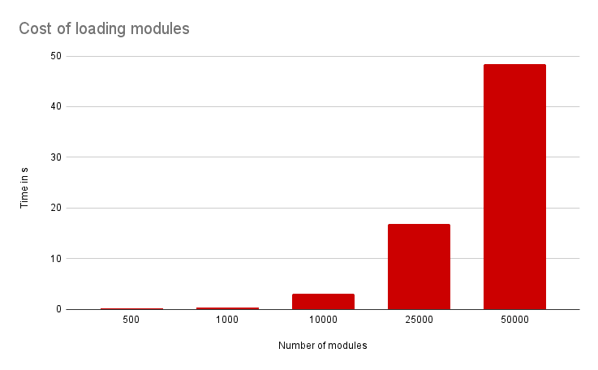

자바스크립트 에코시스템의 속도 향상 - 배럴(Barrel) 파일의 대실패
원문: https://marvinh.dev/blog/speeding-up-javascript-ecosystem-part-7/
요약: 많은 프로젝트에 다른 파일을 다시 export하는 파일들로 가득 차 있습니다. 소위 "배럴(Barrel) 파일"이라고 불리는 이런 파일은 대규모 프로젝트에서 자바스크립트 툴이 느려지는 주요 원인 중 하나입니다.
수많은 파일이 있는 대규모 프로젝트에서 작업을 한다고 가정해 봅시다. 여러분은 새로운 기능을 작업하기 위해 파일을 추가하고 함수를 다른 디렉터리에서 가져왔습니다.
import { foo } from "./some/other-file";
export function myCoolCode() {
// 아주 똑똑한 코드라고 가정합니다. :)
const result = foo();
return result;
}기능을 완성할 생각에 들떠 코드를 실행해 보니, 완료되기까지 시간이 너무 오래 걸린다는 걸 알게 되었습니다. 여러분이 작성한 코드는 매우 간단하기에 시간이 많이 걸리지 않아야 합니다. 이 점이 염려되어, 함수가 작업을 수행하는 데 걸리는 시간을 확인하기 위한 측정 코드를 추가했습니다.
import { foo } from "./some/other-file";
export function myCoolCode() {
console.time();
const result = foo();
console.timeEnd();
return result;
}코드를 다시 실행하면 측정된 값은 매우 짧은 시간으로 나옵니다.
혹시 몰라 이번에는 프로젝트의 메인 진입점 파일에 console.time()문을 추가하고 다시 실행해보겠습니다.
말짱 도루묵입니다. 기록된 측정값은 코드 자체가 매우 빠르다는 것만 확인시켜줄 뿐입니다. 무슨 일이 일어난 걸까요?
자, 이제 배럴 파일이 코드에 미치는 치명적인 영향에 대한 이야기를 시작해보겠습니다.
자세한 정보 수집
지금까지 얻은 핵심 정보는 코드의 런타임이 문제가 아니라는 것입니다. 런타임은 전체 시간의 극히 일부에 불과했습니다. 즉, 코드를 실행하기 전이나 후에 시간이 낭비된다고 가정할 수 있습니다. 경험에 비추어 볼 때, 도구에 소요되는 시간은 프로젝트 코드를 실행하기 전에 소비됩니다.
일부 npm 패키지는 성능상의 이유로 코드를 미리 번들링 한다는 이야기를 들으셨을 겁니다. 이 방법이 도움이 될 수 있을까요? 이 이론을 테스트하기 위해 esbuild를 사용해 코드를 단일 파일로 번들링하기로 결정했습니다. 원본 소스와 가장 비슷하게 코드를 유지하기 위해서 어떤 형태의 최소화(minification)를 의도적으로 비활성화합니다.
번들링을 마치고 해당 파일로 다시 실험해보면 눈 깜짝할 사이에 완료가 됩니다. 호기심에 esbuild를 실행하고 번들 파일을 함께 실행하는 데 걸리는 시간을 측정해 보니 둘을 합친 시간이 원본 소스 코드를 실행하는 것보다 여전히 빠르다는 것을 알 수 있습니다. 그렇죠? 무슨 일이 벌어지고 있는 걸까요?
번들러가 주로 하는 일은 모듈 그래프를 평평하게 만들고 병합하는 것이라는 사실이 문뜩 떠오릅니다. 수천 개의 파일로 구성되어 있던 모듈 그래프가 esbuild를 통해 단일 파일로 병합되었습니다. 이는 모듈 그래프의 크기가 진짜 문제라는 강력한 지표가 될 수 있습니다. 그리고 배럴 파일이 그 주요 원인입니다.
배럴 파일 해부
배럴 파일은 다른 파일만 내보내고 코드 자체는 포함하지 않는 파일입니다. 원어민이 아닌 저로서는 이 용어가 혼란스럽지만 그냥 넘어가겠습니다. 에디터에 자동 import 같은 편의 기능이 없던 시절에는 많은 개발자가 직접 작성해야 하는 import 문의 수를 최소화하려고 노력했습니다.
// 이 import 문을 보세요.
import { foo } from "../foo";
import { bar } from "../bar";
import { baz } from "../baz";이로 인해 모든 폴더에 일반적으로 같은 디렉터리에 있는 다른 파일에서 코드를 다시 export하는 자체 index.js 파일이 생기는 패턴이 생겼습니다.
이러한 파일이 있으면 다른 모든 코드가 하나의 import 문만 참조하면 되기 때문에 수동 입력 작업이 줄어드는 효과가 있었습니다.
// feature/index.js
export * from "./foo";
export * from "./bar";
export * from "./baz";이제 이전에 표시된 import 문을 한 줄로 축소할 수 있습니다.
import { foo, bar, baz } from "../feature";시간이 지나면 이 패턴이 코드 베이스 전체에 퍼지고 프로젝트의 모든 폴더에 index.js 파일이 생깁니다. 꽤 멋지지 않나요? 글쎄요.
전부 괜찮지 않습니다.
이런 셋업에서 모듈은 다른 파일을 import 하는 또 다른 배럴 파일을 import 하고, 이 배럴 파일은 또 다른 배럴 파일을 가져오는 식으로 import할 가능성이 높습니다. 결국에는 거미줄처럼 얽힌 import 문을 통해 프로젝트의 모든 파일을 import 하게 됩니다. 그리고 프로젝트가 클수록 이런 모든 모듈을 로드하는 데 시간이 더 오래 걸립니다.
자문해 보세요. 무엇이 더 빠를까요? 3만 개의 파일을 로드하기? 아니면 10개? 아마도 10개의 파일만 로드하는 것이 더 빠를 것입니다.
모듈이 필요할 때만 로드된다는 것은 자바스크립트 개발자들 사이에서 흔히 발생하는 오해입니다. 이는 사실이 아닙니다. 왜냐하면 그렇게 하면 전역이나 모듈 실행 순서에 의존하는 코드가 손상될 수 있습니다.
// a.js
globalThis.foo = 123;
// b.js
console.log(globalThis.foo); // 123 이 로깅되어야 함
// index.js
import "./a";
import "./b";엔진이 첫 번째 ./a import를 로드하지 않으면, 코드는 예기치 않게 123 대신 undefined가 기록됩니다.
배럴 파일이 성능에 미치는 영향
테스트 러너와 같은 도구를 고려하면 상황은 더욱 심각해집니다. 널리 사용되는 jest 테스트 러너에서 각 테스트 파일은 고유한 자식 프로세스에서 실행됩니다. 이는 사실상 모든 테스트 파일이 모듈 그래프를 처음부터 다시 구성하고 그에 대한 비용을 지불해야 한다는 것을 뜻합니다. 프로젝트에서 모듈 그래프를 구성하는 데 6초가 걸리고 테스트 파일이 100개만 있다고 가정하면 모듈 그래프를 반복적으로 구성하는 데 총 10분을 낭비하는 것입니다. 그 시간 동안 테스트나 다른 코드는 실행되지 않습니다. 엔진이 소스 코드를 준비해서 실행할 수 있도록 하는 데 필요한 시간일 뿐입니다.
배럴 파일이 성능에 심각한 영향을 미치는 또 다른 영역은 모든 종류의 import 사이클 린트 규칙입니다. 일반적으로 린터는 파일 단위로 실행되므로 모듈 그래프를 구성하는 데 드는 비용을 모든 파일에 지불해야 합니다. 이로 인해 린팅 시간이 통제 불능 상태가 되어 대규모 프로젝트에서 갑자기 린팅에 몇 시간이 걸리는 경우가 종종 있습니다.
원시적인 수치를 얻고 모듈 그래프를 구성하는 데 드는 비용을 더 잘 파악하기 위해 파일을 서로 import 하는 프로젝트를 생성했습니다. 모든 파일은 비어 있으며 import 문 이외의 코드는 포함하지 않습니다. 시간은 제 MacBook M1 Air (2020)에서 측정했습니다.

보시다시피 모듈을 더 적게 로드하면 그만한 가치가 있습니다. 이러한 숫자를 100개의 테스트 파일이 있는 프로젝트에 적용하고, 각 테스트 파일에 새로운 자식 프로세스를 생성하는 테스트 실행 도구를 사용한다고 가정해 봅시다. 여기서는 테스드 러너가 4개의 테스트를 병렬로 실행할 수 있다고 가정해 보겠습니다.
모듈 500 개:
0.15s \* 100 / 4=3.75s오버헤드모듈 1000 개:
0.31s \* 100 / 4=7.75s오버헤드모듈 10000 개:
3.12s \* 100 / 4=1:18m오버헤드모듈 25000 개:
16.81s \* 100 / 4=~7:00m오버헤드모듈 50000 개:
48.44s \* 100 / 4=~20:00m오버헤드
이것은 인위적인 설정이므로, 낮게 잡힌 수치입니다. 실제 프로젝트에서는 이 수치가 더 나빠질 가능성이 높습니다. 배럴 파일은 툴링 성능 측면에서 좋지 않습니다.
해야 할 일
코드에 배럴 파일이 몇 개만 있는 것은 보통 괜찮지만, 모든 폴더에 배럴 파일이 있으면 문제가 됩니다. 안타깝게도 자바스크립트 업계에서는 이런 일이 드물지 않게 발생합니다.
따라서 배럴 파일을 광범위하게 사용하는 프로젝트에서 작업하는 경우, 많은 작업을 60~80% 더 빠르게 만드는 무료 최적화를 적용할 수 있습니다.
모든 배럴 파일을 제거하세요.